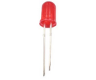

Note
Bonjour et bienvenue dans la communauté SunFounder Raspberry Pi & Arduino & ESP32 Enthusiasts sur Facebook ! Plongez plus profondément dans l’univers de Raspberry Pi, Arduino et ESP32 avec d’autres passionnés.
Pourquoi nous rejoindre ?
Support d’experts : Résolvez vos problèmes après-vente et vos défis techniques avec l’aide de notre communauté et de notre équipe.
Apprenez et partagez : Échangez des astuces et des tutoriels pour améliorer vos compétences.
Aperçus exclusifs : Profitez d’un accès anticipé aux annonces de nouveaux produits et à des avant-premières.
Réductions exclusives : Bénéficiez de réductions sur nos derniers produits.
Promotions festives et cadeaux : Participez à des promotions et à des cadeaux lors des fêtes.
👉 Prêt à explorer et à créer avec nous ? Cliquez sur [Ici] et rejoignez-nous dès aujourd’hui !
1.1.1 LED clignotante
Introduction
Dans cette leçon, nous allons apprendre à programmer une LED clignotante. Grâce à vos paramètres, votre LED peut produire une série de phénomènes intéressants. Allons-y !
Composants

Note
Pour que tout se passe bien, vous devez disposer de votre propre Raspberry Pi, carte TF et alimentation Raspberry Pi.
Principe
Plaque d’essai
Une plaque d’essai est une base de construction pour le prototypage électronique. Elle est utilisée pour construire et tester des circuits rapidement avant de finaliser un design. Elle comporte de nombreux trous dans lesquels peuvent être insérés des composants tels que des circuits intégrés (CI), des résistances et des fils de connexion. La plaque d’essai permet de brancher et de retirer facilement les composants.
L’image montre la structure interne d’une plaque d’essai complète. Bien que les trous semblent indépendants, ils sont en réalité connectés entre eux par des bandes métalliques à l’intérieur.

LED
Une LED est un type de diode. Elle ne brillera que si sa patte longue est connectée au pôle positif et sa patte courte au pôle négatif.

La LED ne doit pas être connectée directement à l’alimentation, car cela pourrait endommager le composant. Une résistance de 160Ω ou plus (pour un fonctionnement en 5V) doit être placée en série dans le circuit.
Résistance
Une résistance est un élément électronique qui limite le courant dans une branche de circuit. Une résistance fixe est un type de résistance dont la valeur ne peut pas être modifiée, tandis que celle d’un potentiomètre ou d’une résistance variable peut être ajustée.
Dans ce kit, nous utilisons des résistances fixes. Elles sont essentielles pour protéger les composants connectés dans le circuit. Les images ci-dessous montrent une résistance de 220Ω et deux symboles de circuit couramment utilisés pour représenter une résistance. L’unité de la résistance est l’ohm (Ω), et les unités supérieures incluent KΩ et MΩ. Voici leurs équivalences : 1 MΩ = 1000 KΩ, 1 KΩ = 1000 Ω. En général, la valeur de la résistance est marquée dessus. Si vous voyez ces symboles dans un circuit, cela signifie qu’une résistance est présente.


Pour utiliser une résistance, il est important de connaître sa valeur. Voici deux méthodes : observer les bandes colorées sur la résistance ou utiliser un multimètre pour mesurer la valeur. Nous recommandons la première méthode, plus rapide et pratique. Utilisez un multimètre pour mesurer la résistance si nécessaire.
Comme montré sur la carte, chaque couleur représente un chiffre.

Schéma de montage
Dans cette expérience, connectez une résistance de 220Ω à l’anode (la patte longue de la LED), puis reliez la résistance à 3,3V, et connectez la cathode (la patte courte) de la LED au GPIO17 du Raspberry Pi. Pour allumer la LED, nous devons régler GPIO17 sur bas (0V). Nous pouvons obtenir ce comportement par programmation.
Note
Pin11 désigne la 11e broche du Raspberry Pi de gauche à droite, et ses numéros de broches correspondants wiringPi et BCM sont indiqués dans le tableau ci-dessous.
Dans le contenu lié au langage C, nous considérons que GPIO0 est équivalent à 0 dans wiringPi. Dans le contenu Python, BCM 17 correspond à 17 dans la colonne BCM du tableau suivant. Ils correspondent également à la 11e broche du Raspberry Pi, Pin 11.
T-Board Name |
physical |
wiringPi |
BCM |
GPIO17 |
Pin 11 |
0 |
17 |

Procédures expérimentales
Étape 1 : Construisez le circuit.

Pour les utilisateurs du langage C
Étape 2 : Accédez au dossier du code.
Si vous utilisez un écran, nous vous recommandons de suivre les étapes suivantes.
Accédez à ~/ et trouvez le dossier davinci-kit-for-raspberry-pi.
Trouvez le dossier C, faites un clic droit dessus et sélectionnez Ouvrir dans le Terminal.

Une fenêtre apparaîtra comme ci-dessous. Vous êtes maintenant dans le chemin du code 1.1.1_BlinkingLed.c.

Dans les prochaines leçons, nous utiliserons une commande pour accéder au fichier de code au lieu d’un clic droit. Cependant, vous pouvez choisir la méthode que vous préférez.
Si vous vous connectez au Raspberry Pi à distance, utilisez la commande
cdpour changer de répertoire :
cd ~/davinci-kit-for-raspberry-pi/c/1.1.1/
Note
Changez le répertoire pour accéder au chemin du code de cette expérience via cd.
Dans tous les cas, vous êtes maintenant dans le dossier C. Les étapes suivantes, basées sur ces deux méthodes, sont les mêmes. Continuons.
Étape 3 : Compilez le code.
gcc 1.1.1_BlinkingLed.c -o BlinkingLed -lwiringPi
Note
gcc est le GNU Compiler Collection. Ici, il sert à compiler le fichier C 1_BlinkingLed.c et à générer un fichier exécutable.
Dans la commande, -o signifie output (le caractère immédiatement après -o est
le nom du fichier exécutable généré après compilation, ici nommé BlinkingLed ),
et -lwiringPi permet de charger la bibliothèque wiringPi ( l est l’abréviation
de library).
Étape 4 : Exécutez le fichier exécutable généré à l’étape précédente.
sudo ./BlinkingLed
Note
Pour contrôler les GPIO, vous devez exécuter le programme avec la commande sudo
(superuser do). Le ./ indique le répertoire actuel. La commande complète
exécute donc BlinkingLed dans le répertoire actuel.

Après exécution du code, vous verrez la LED clignoter.
Note
Si cela ne fonctionne pas après exécution ou si un message d’erreur du type : « wiringPi.h: No such file or directory » apparaît, veuillez consulter C code is not working?.
Si vous souhaitez modifier le fichier de code 1.1.1_BlinkingLed.c, appuyez sur
Ctrl + C pour arrêter l’exécution du code. Tapez ensuite la commande suivante
pour l’ouvrir :
nano 1.1.1_BlinkingLed.c
Note
nano est un outil d’édition de texte. Cette commande ouvre le fichier de code
1.1.1_BlinkingLed.c avec cet outil.
Appuyez sur Ctrl+X pour quitter. Si vous avez modifié le code, une invite vous
demandera si vous souhaitez enregistrer les modifications. Tapez Y (enregistrer)
ou N (ne pas enregistrer), puis appuyez sur Entrée pour quitter. Répétez les
étapes « Étape 3 » et « Étape 4 » pour voir l’effet après modification.

Code
Le code du programme est le suivant :
#include <wiringPi.h>
#include <stdio.h>
#define LedPin 0
int main(void)
{
// Si l'initialisation de wiringPi échoue, afficher un message à l'écran
if(wiringPiSetup() == -1){
printf("setup wiringPi failed !");
return 1;
}
pinMode(LedPin, OUTPUT); // Définir LedPin comme sortie pour y écrire une valeur
while(1){
// LED allumée
digitalWrite(LedPin, LOW);
printf("...LED on\n");
delay(500);
// LED éteinte
digitalWrite(LedPin, HIGH);
printf("LED off...\n");
delay(500);
}
return 0;
}
Explication du code
include <wiringPi.h>
La bibliothèque de gestion matérielle conçue pour le langage C du Raspberry Pi permet l’initialisation du matériel, la gestion des E/S, du PWM, etc.
#include <stdio.h>
Bibliothèque d’entrées/sorties standard. La fonction printf utilisée pour afficher des données à l’écran est implémentée via cette bibliothèque. Il existe de nombreuses autres fonctions à explorer.
#define LedPin 0
La broche GPIO17 du T_Extension Board correspond à GPIO0 dans wiringPi. Nous assignons GPIO0 à LedPin, qui représentera GPIO0 dans le code.
if(wiringPiSetup() == -1){
printf("setup wiringPi failed !");
return 1;
Cette fonction initialise wiringPi en supposant que le programme utilise la numérotation des broches de wiringPi.
Cette fonction doit être appelée avec des privilèges root. Si l’initialisation échoue, un message est affiché à l’écran. La fonction « return » permet de sortir de la fonction courante. Utiliser return dans la fonction main() termine le programme.
pinMode(LedPin, OUTPUT);
Définir LedPin comme sortie pour y écrire une valeur.
digitalWrite(LedPin, LOW);
Définir GPIO0 à 0V (niveau bas). Comme la cathode de la LED est connectée à GPIO0, la LED s’allumera si GPIO0 est en niveau bas. Inversement, en le mettant en niveau haut (digitalWrite (LedPin, HIGH)), la LED s’éteindra.
printf("...LED off\n");
La fonction printf est une fonction standard et son prototype est défini dans le fichier d’en-tête « stdio.h ». La chaîne de contrôle de format est utilisée pour spécifier le format de sortie, et se compose de chaînes formatées et non formatées. Ce qui est utilisé ici est une chaîne non formatée, suivie de « n » pour indiquer un retour à la ligne.
delay(500);
Le délai (500) maintient l’état actuel (HAUT ou BAS) pendant 500ms.
C’est une fonction qui suspend le programme pendant une certaine durée. La vitesse du programme est déterminée par le matériel. Ici, nous allumons ou éteignons la LED. Sans cette fonction, le programme s’exécuterait très rapidement et en boucle continue. Nous utilisons donc la fonction de délai pour faciliter l’écriture et le débogage du programme.
return 0;
Ce code se trouve à la fin de la fonction main(), indiquant que le programme se termine avec succès.
Pour les utilisateurs de Python
Étape 2 : Accédez au dossier du code et exécutez-le.
Si vous utilisez un écran, suivez les étapes suivantes.
Trouvez le fichier 1.1.1_BlinkingLed.py et double-cliquez dessus pour l’ouvrir. Vous êtes maintenant dans le fichier.
Cliquez sur Exécuter ->Exécuter le module dans la fenêtre et le contenu suivant apparaîtra.
Pour arrêter l’exécution, cliquez simplement sur le bouton X en haut à droite pour fermer la fenêtre, puis vous reviendrez au code. Si vous modifiez le code, avant de cliquer sur
Exécuter le module (F5), vous devez l’enregistrer d’abord. Ensuite, vous pourrez voir les résultats.
Si vous vous connectez à distance au Raspberry Pi, tapez la commande suivante :
cd ~/davinci-kit-for-raspberry-pi/python
Note
Changez le répertoire vers le chemin du code de cette expérience via cd.
Étape 3 : Exécutez le code
sudo python3 1.1.1_BlinkingLed.py
Note
Ici, sudo signifie superuser do, et python signifie exécuter le fichier avec Python.
Après l’exécution du code, vous verrez la LED clignoter.
Étape 4 : Si vous souhaitez modifier le fichier de code 1.1.1_BlinkingLed.py,
appuyez sur Ctrl + C pour arrêter l’exécution du code. Tapez ensuite la commande
suivante pour ouvrir 1.1.1_BlinkingLed.py :
nano 1.1.1_BlinkingLed.py
Note
nano est un outil d’édition de texte. Cette commande ouvre le fichier de code 1.1.1_BlinkingLed.py avec cet outil.
Appuyez sur Ctrl+X pour quitter. Si vous avez modifié le code, une invite
vous demandera si vous souhaitez enregistrer les modifications. Tapez Y (enregistrer)
ou N (ne pas enregistrer).
Ensuite, appuyez sur Entrée pour quitter. Tapez à nouveau nano 1.1.1_BlinkingLed.py
pour voir l’effet après modification.
Code
Note
Vous pouvez Modifier/Réinitialiser/Copier/Exécuter/Arrêter le code ci-dessous. Mais avant cela, vous devez vous rendre dans le chemin du code source, comme davinci-kit-for-raspberry-pi/python.
import RPi.GPIO as GPIO
import time
LedPin = 17
def setup():
# Définir les modes GPIO sur la numérotation BCM
GPIO.setmode(GPIO.BCM)
# Définir le mode de LedPin en sortie et initialiser le niveau à High (3.3V)
GPIO.setup(LedPin, GPIO.OUT, initial=GPIO.HIGH)
# Définir une fonction principale pour le processus principal
def main():
while True:
print ('...LED ON')
# Allumer la LED
GPIO.output(LedPin, GPIO.LOW)
time.sleep(0.5)
print ('LED OFF...')
# Éteindre la LED
GPIO.output(LedPin, GPIO.HIGH)
time.sleep(0.5)
# Définir une fonction destroy pour nettoyer tout après l'exécution du script
def destroy():
# Éteindre la LED
GPIO.output(LedPin, GPIO.HIGH)
# Libérer les ressources
GPIO.cleanup()
# Si ce script est exécuté directement, faire :
if __name__ == '__main__':
setup()
try:
main()
# Lorsque 'Ctrl+C' est pressé, la fonction destroy() sera exécutée.
except KeyboardInterrupt:
destroy()
Explication du code
#!/usr/bin/env python3
Lorsque le système détecte cette ligne, il cherchera le chemin d’installation de Python dans les paramètres env, puis appellera l’interpréteur correspondant pour exécuter le script. Cela permet d’éviter que l’utilisateur n’installe Python dans le chemin par défaut /usr/bin.
import RPi.GPIO as GPIO
De cette manière, on importe la bibliothèque RPi.GPIO, puis on définit une variable GPIO pour remplacer RPI.GPIO dans le code suivant.
import time
On importe la bibliothèque time, qui est utilisée pour les fonctions de temporisation dans le programme.
LedPin = 17
La LED est connectée au GPIO17 de la carte d’extension en forme de T, soit BCM 17.
def setup():
GPIO.setmode(GPIO.BCM)
GPIO.setup(LedPin, GPIO.OUT, initial=GPIO.HIGH)
Définit le mode de LedPin en sortie et initialise le niveau à High (3.3V).
Il existe deux manières de numéroter les broches d’E/S sur un Raspberry Pi avec RPi.GPIO : les numéros BOARD et les numéros BCM. Dans nos leçons, nous utilisons les numéros BCM. Vous devez définir chaque canal que vous utilisez en entrée ou en sortie.
GPIO.output(LedPin, GPIO.LOW)
Définir GPIO17 (BCM17) sur 0V (niveau bas). Comme la cathode de la LED est connectée à GPIO17, la LED s’allume.
time.sleep(0.5)
Temporisation de 0,5 seconde. Ici, l’instruction est similaire à la fonction delay en langage C, et l’unité est la seconde.
def destroy():
GPIO.cleanup()
Définir une fonction destroy pour nettoyer tout après l’exécution du script.
if __name__ == '__main__':
setup()
try:
main()
# Lorsque 'Ctrl+C' est pressé, la fonction destroy() sera exécutée.
except KeyboardInterrupt:
destroy()
Ceci est la structure générale d’exécution du code. Lorsque le programme commence à s’exécuter, il initialise la broche via setup(), puis exécute le code dans la fonction main() pour régler la broche sur des niveaux haut et bas. Lorsque “Ctrl+C” est pressé, la fonction destroy() est exécutée.
Image du phénomène